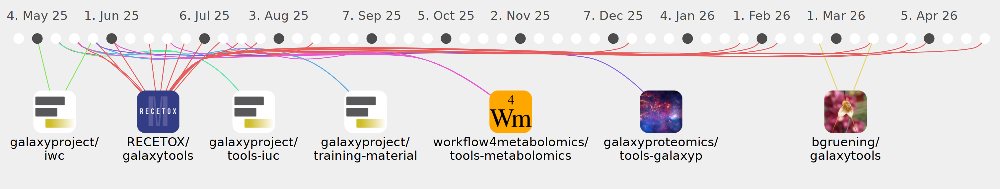

hechth

Commits all-time: 722
Commits last year: 292

(255)
- 8d0a3d3
- 4b8a43b
- deaf577
- 17a9f7a
- d576327
- 934037d
- 8d3891a
- 8775353
- c626c8d
- bf46f5d
- 01c4b5a
- 64a1936
- f573f4d
- baa8740
- cfc7ad8
- 194b150
- 28801a7
- 78a6666
- a461231
- ac09c21
- 3a5aa45
- d2266e1
- e347906
- 019a108
- 8d8eee5
- ec040f6
- aea5530
- 46219c9
- 84d3b7b
- 46ee0d2
- bccac79
- e433376
- b957449
- 722ce0a
- 84de3bc
- d8d33bc
- 75a3050
- c998f51
- 7f555d5
- e53b572
- 50c3dae
- bf26289
- fbca3b0
- 7948bcd
- 55c0154
- 2533ebe
- 25f2e23
- dc508ea
- 21ff731
- 527962e
- 9ab5b5f
- 453e207
- 0a69115
- 500a1a0
- bd25665
- 3f00aa4
- 331531c
- fdff052
- c49780d
- 541ff2b
- fea85de
- b030305
- 1d1ecf7
- 38554fe
- 77eda84
- 89ac6b5
- a8cf092
- 2ad7f0c
- 50c6409
- bc3445f
- 0efb53d
- 113433b
- dd06701
- f1da4d7
- 7d870a7
- 5462c94
- 2abca92
- 6c834bd
- 57da999
- 60a95a9
- 531aad6
- 013d7c8
- d42dca4
- 8e93f3b
- 070a3fd
- 8db07ed
- 68505a1
- 43fea31
- b226bb9
- 31cb461
- b88eaca
- e2ab3da
- 11666fa
- 44e9371
- 12a4128
- 19b171f
- 1ff446e
- de72a8b
- 3485968
- 46c678e
- 828c48d
- 23c3773
- 5092f4b
- c825c0f
- 364f430
- ed467af
- 59c4d55
- bcb5b47
- 485b12a
- fff5199
- c7b13fa
- 7ca71fd
- 87bb82e
- 52b107c
- 67de7e4
- dd754c8
- 0e91eb2
- 5e83c9a
- 8410a57
- 7388d73
- 9914acd
- 6de696d
- c85fad8
- d6478a0
- 531dc7a
- 747a17e
- 1a2f862
- e51baeb
- f695174
- 37faca3
- 69e52fe
- e3ad09c
- b07150b
- ae94362
- ee42405
- 8d4d69f
- 4bd610e
- 2ab8e74
- 14316e7
- c6e502d
- a609fa0
- ac37216
- c16561e
- b7a4bec
- fb117b5
- e923499
- a7913fc
- f5e491b
- db14fdb
- 88f9bd8
- 4933803
- e33bcfd
- 769c746
- c24f25d
- 9432288
- 5a088c3
- 4bd188e
- 7ceacc8
- 3e2d9bc
- 53ba7e6
- 1e98df2
- 69df6c2
- 74b2de2
- efec3a8
- cff766a
- 5c6f057
- 862b380
- f92cda0
- e4d6c16
- bb9a509
- 8c76667
- d74b0da
- 335c897
- c52dfae
- ff9ae5d
- 9cf1119
- 1a9a1ef
- ed95086
- f515aa6
- 5da5b5e
- 7d98b78
- e21ab1b
- 57093b6
- b000c35
- a03fdfa
- 699633f
- b05daf1
- a7a24d5
- d6ec6cd
- 129488b
- 54f1557
- 56c59c3
- 9d57959
- 0cc8299
- 60ea3a6
- 0db7a67
- 6af5d3f
- a968cca
- c4a8112
- f4e336b
- 3825158
- 7576d18
- 4df9dd4
- dc6b5d6
- e6d2f36
- 0b48c7a
- daea853
- 230a1bb
- 3d47dac
- 5e4631a
- cc3286e
- 605a45c
- 5adfebd
- a0a1a3d
- e680480
- f7602ea
- c952194
- f28b094
- f289db9
- 24386bd
- 94a7216
- 2fd1597
- b814546
- 12098bd
- a156db8
- a86bfa9
- 570b830
- be9da0b
- 6ee000c
- 5f5f2bf
- eb5a412
- 25354ae
- c6ccc96
- ca0b9e6
- 29945d8
- 6a629bc
- 0b93231
- f88e9e4
- 704c691
- 768a16e
- c6e8064
- b4fb787
- 9b6100c
- 8a94b99
- dfaf545
- 0a8197f
- c4312c6
- 319f8be
- d0ff40e
- f697173
- d4bbe52
- 9a4ed9f
- 2f2ab88
- c852c55
- 68159a9
(27)
(4)
(3)
(2)
(1)